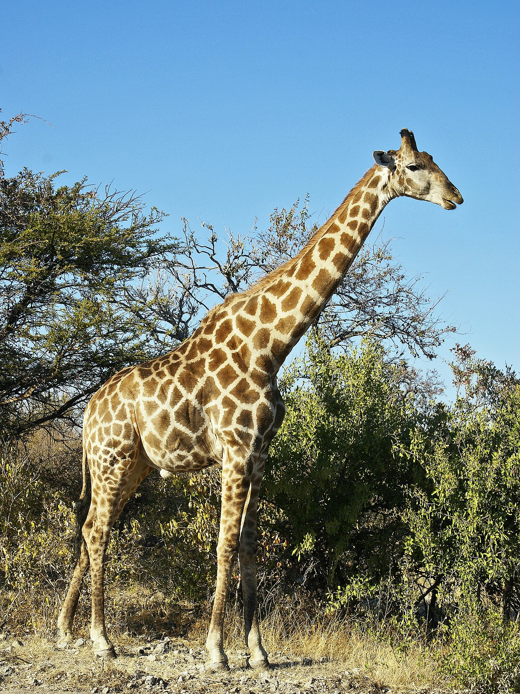

 From Wikipedia: The giraffe is a tall African mammal belonging to the genus Giraffa. Specifically, It is an even-toed ungulate. It is the tallest living terrestrial animal and the largest ruminant on Earth. Traditionally, giraffes were thought to be one species, Giraffa camelopardalis, with nine subspecies. They average a height between 14 to 19 ft, and have an average lifespan of up to 38 years. They usually inhabit areas that are savannahs or woodlands, and usually eat leaves, fruits, and flowers of woody plants and they get their food from high areas where other herbivores are unable to reach.